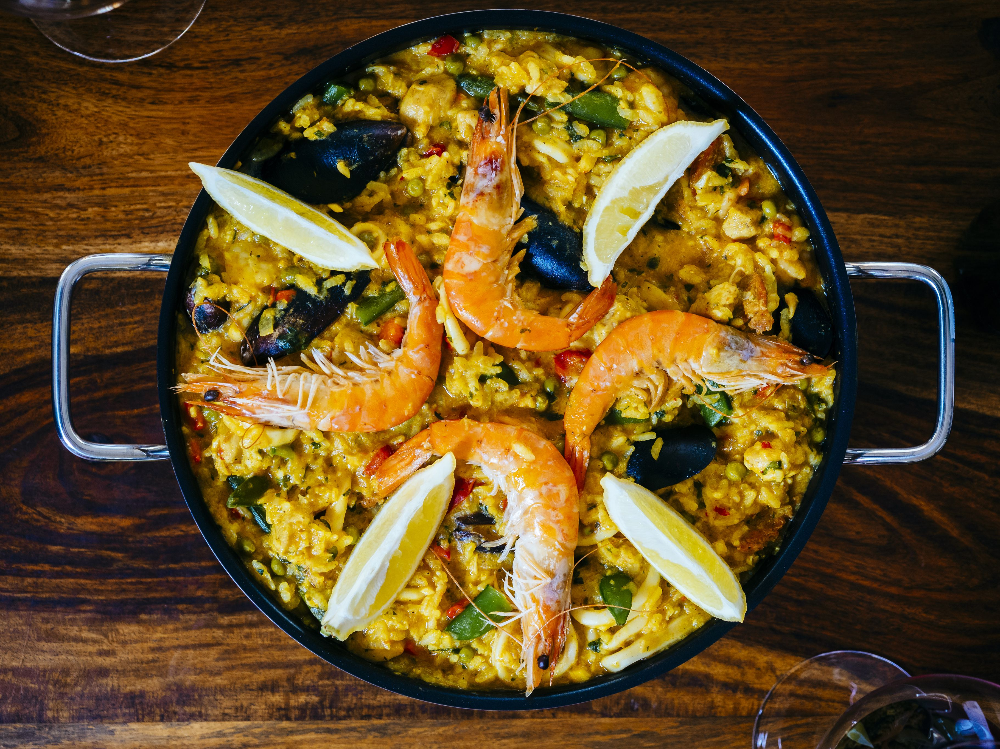
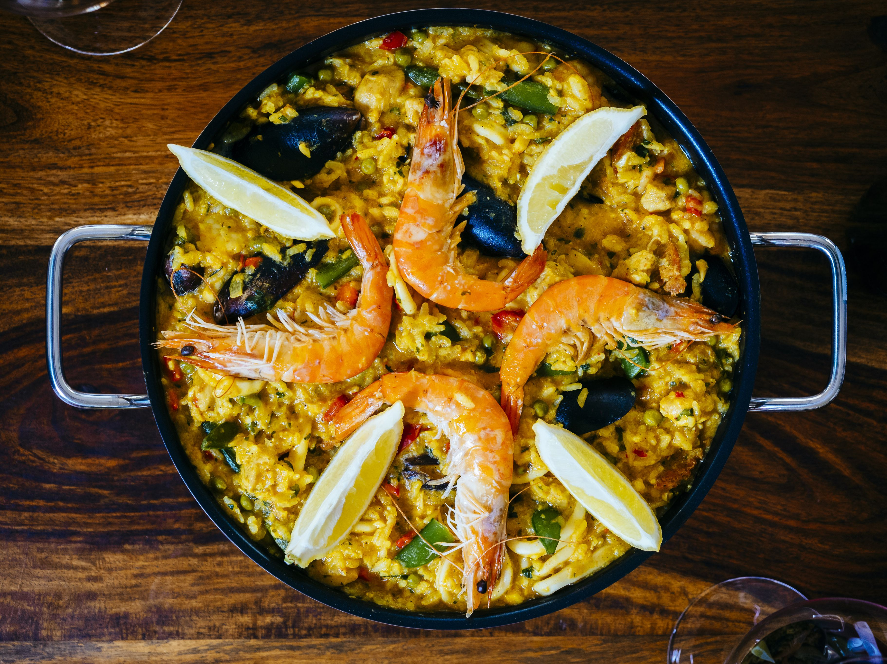
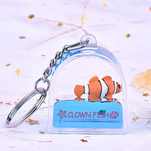
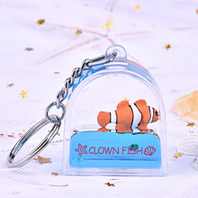

Our catering service --- GOOD MORNING SEAFOOD

Located near the Dolphinarium, this restaurant offers a variety of seafood including specialities, beverages and delicious desserts.
It is decorated with many marine style ornaments to make you feel like you are in the ocean.
Come and enjoy the food, you will like them!
 



Our shopping service --- SOVENIR SHOP

Here are also some good souvenirs you can take home, some cute animal pendants, or some fish sticker for your kids.
You can find them in many places in the aquarium, why not come and get one?
Come and see, and they are waiting for you to take them home!

 

There are more services waiting for you to enjoy!
Contact telephone number : 18019630010 Miss Chen (the curator)
19028493029 Mr.Guo (the deputy curator)
17392957399 Miss Xu (supervisor of service department)
15930582094 Mr.Sun (supervisor of business department)
E-mail adress : morningaquarium@gmail.com
Location : 5 Queenslea Ave, North York, Toronto, ON M9N 3X9 Made by _Lucy, Alice, Patricia, Petra